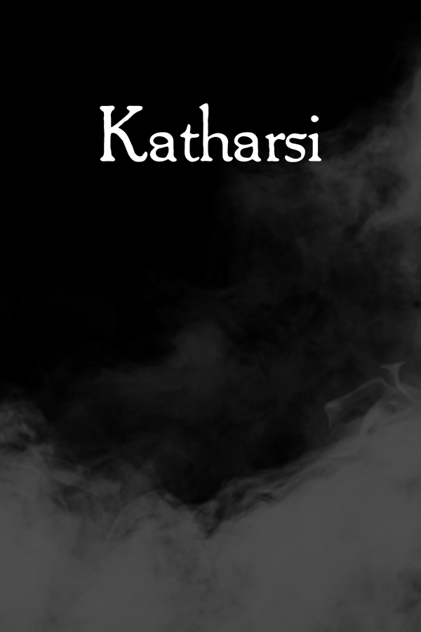
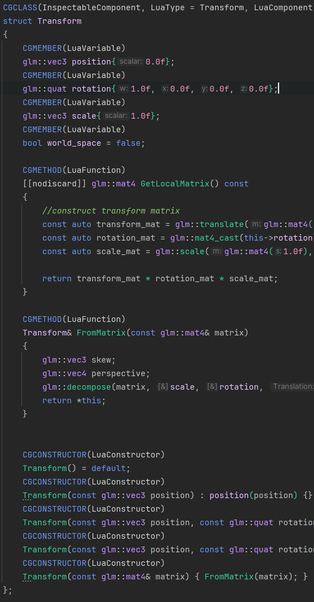
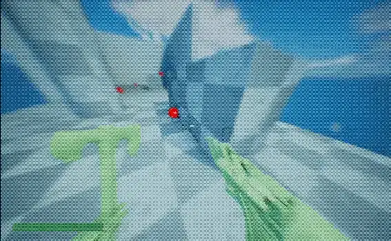

Featured Projects
A showcase of tools, systems, and games that demonstrate my expertise in pipeline development, engine programming, and team collaboration.
Steam Input API Plugin
Drop-in Unreal Engine plugin that seamlessly integrates Steam's complete input system with Enhanced Input and Slate UI—solving real developer pain points with zero boilerplate.
- Zero-configuration Steam Input: register once, use everywhere
- Full device coverage: controllers, trackpads, simulated mouse
- Native Slate UI bindings with runtime remapping
- Graceful fallback when Steam Input is disabled

Katharsi - Pipeline & Tools Development
Leading build pipeline and tools development for a 15-person team creating an atmospheric puzzle adventure. Shipped playable Steam demo with automated CI/CD infrastructure.
- Automated Jenkins CI/CD with daily testing suites
- Cross-platform build system with Steam depot uploads
- Custom tools for asset management and quality assurance
- Team productivity improvements through automation

Static Reflection System
Header-only C++ reflection library using Clang for zero-runtime-cost metadata generation. Unreal-style macros with fully customizable code generation pipeline.
- Zero runtime cost with compile-time annotations
- Clang-powered parsing for 100% accurate symbol extraction
- Cross-platform support (MSVC, GCC, Clang)
- Scriptable code generation for custom output formats

Dynamic Geometry Zones
Unreal Engine plugin inspired by Skyward Sword's time-shift mechanics. Real-time constructive solid geometry with seamless area-based transitions.
- Real-time CSG operations with dynamic collision updates
- Seamless geometry transitions within defined areas
- Configurable material handling and custom mesh support
- Integration with Unreal's Geometry Scripting plugin
